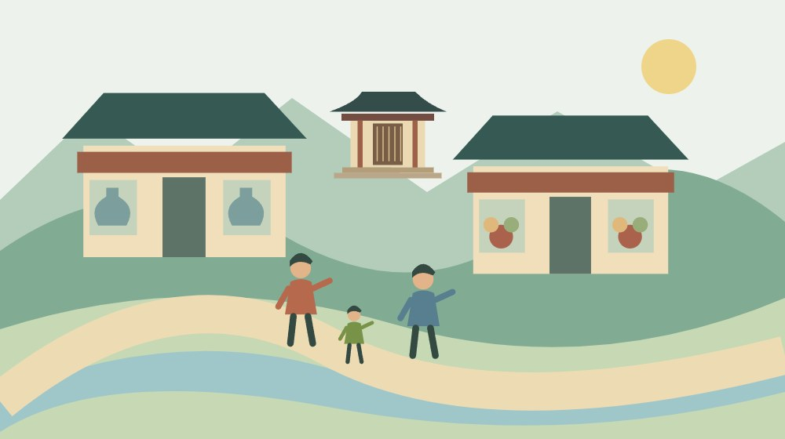
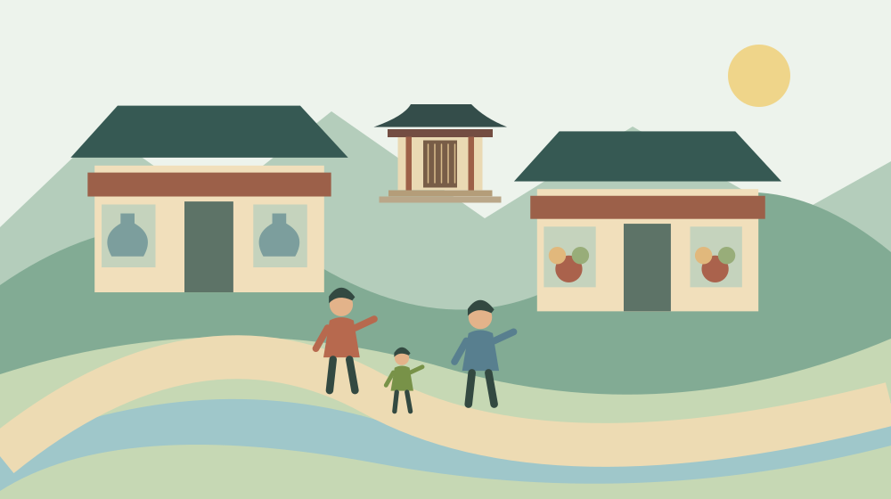
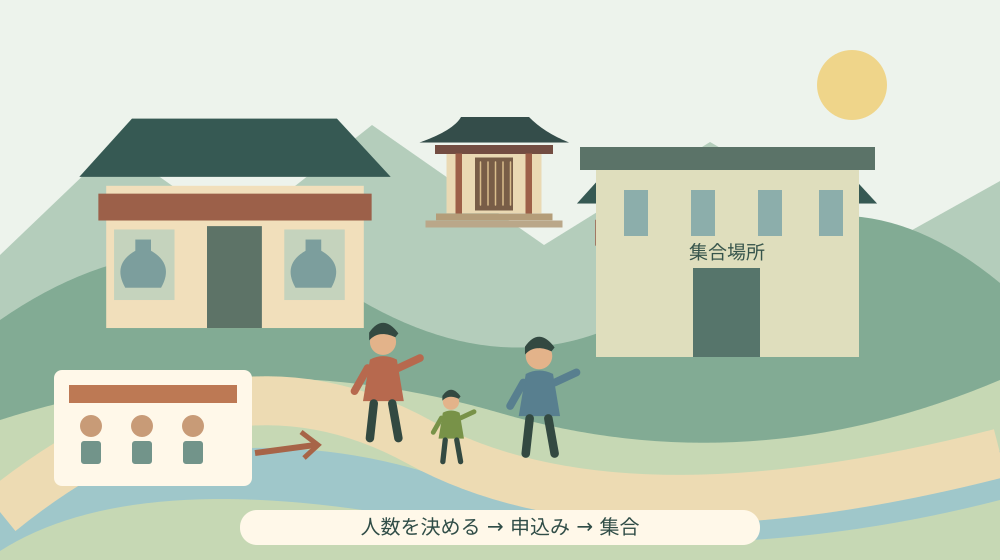

森町観光ウォーク2026｜申込み前の確認事項

Q. 森町観光ウォーク2026は、家族で当日行けば参加できる？
第21回森町観光ウォークは2026年11月29日開催、申込期限は11月6日です。事前申込みなしでは参加できません。参加費は1人1,500円、未就学児無料で当日集金。小学生以下は保護者同伴です。今日は参加人数を決め、集合時刻・距離・昼食など未確認の条件を観光協会0538-85-6316へ確かめます。
店と案内役の準備に、参加人数がつながっている
町を歩く催しには、歩く人を迎える店、立ち寄る場所を整える人、案内する側の準備があります。家族で気軽に楽しめる時間の裏に、受入れの段取りがあることを忘れたくありません。森町観光ウォークを検討するときは、まず事前申込みと参加人数を、主催者への約束として整理します。
大石浩之（磐田市／不動産業）です。私は町歩きの魅力を、店の名前を並べるだけで伝えたくありません。子どもを連れて歩けるか、費用はいくらか、帰りまで予定が組めるか。その判断材料がそろうと、家族は無理なく参加を選べます。今回は申込み前の確認に焦点を当てます。
森町観光協会の「第21回森町観光ウォーク参加者募集」は、2026年10月1日現在の情報として掲載されています。この記事では10月3日にHTML本文を確認しました。11月29日の催しへの事前案内であり、参加して歩いた体験記ではありません。掲載されていない条件を、経験したかのようには書きません。
町の菓子店を自分の都合で訪ねる散歩と、開催日を決めた観光ウォークは、参加の仕組みが違います。予定が空いた当日に現地へ行けばよい、と考える前に受付条件を読みます。家族の人数を決める今日の一歩が、店や案内役の準備にもつながる記事にします。
開催日は11月29日、申込期限は11月6日
森町観光協会の案内では、第21回森町観光ウォークの開催日は2026年11月29日（日）、申込期限は11月6日（金）です。事前に申込みがない場合は参加できないと明記されています。開催日まで時間があっても、申込みを済ませる日は別です。二つの日付を手帳に分けて記録してください。
申込方法は電話、FAX、メール、申込フォーム等と案内されています。観光協会の問い合わせ電話は0538-85-6316です。必要事項や送付先は、公式ページの現行案内から確認します。この記事では個別の受付を代行せず、入力内容を送ったことと受付が完了したことを分けて確認する方法を勧めます。
参加費は1人1,500円、未就学児は無料で、当日の受付時に集金すると記載されています。小学生以下の参加には保護者の同伴が必要です。「未就学児は無料」という料金の条件と、「小学生以下は保護者同伴」という参加の条件は別々に確認してください。無料なら一人で参加できるという意味ではありません。
荒天の場合は中止になる場合があると案内されています。荒天の判断基準、中止を知らせる方法、申込み後の連絡手順は、確認した本文だけでは分かりません。申込時に、変更の確認先も一緒に控えておくと、11月29日の出発前にどこを見ればよいか迷わずに済みます。
募集案内に申込期限があることは、定員の有無や締切日までの受付保証を示すものではありません。本文では定員を確認できませんでした。参加を希望する家族は、人数と条件が整ったら受付状況を確かめます。定員なし、抽選なし、先着順などの方式は、記載がないまま補いません。
森町役場を発着し、陶房と菓子店、社寺を巡る
公式案内の出発と到着は森町役場です。集合場所の住所は静岡県周智郡森町森2101-1と記されています。経路には静邨陶房、中村陶房、菓匠あさおか、菓子司中島屋、金守神社が掲載されています。店や社寺の名前が並ぶことで、単に距離を歩く催しではないことが分かります。
その後の経路には、本町の町並み、昼休憩地点の天宮神社、城下の町並み、旧城下学校、新町月花園、栄正堂などが掲載されています。ここでは公式本文の経路を紹介しています。各地点の滞在時間、案内の内容、店で提供される品物の種類や量までは、本文から確認できません。
観光協会は、道中の菓子店で各店舗のスイーツを楽しむ催しとして紹介しています。ただし、どの菓子がどの範囲で参加費に含まれるか、追加の買い物ができるかは、確認した本文だけでは分かりません。家族へ具体的な商品を約束する前に、主催者の案内を確かめてください。
天宮神社が昼休憩地点とされていることは、昼食が用意されることや飲食費が参加費に含まれることを示していません。弁当を持参するのか、別に購入するのかも未確認です。食事が必要な家族にとっては、経路と同じくらい予定に影響するため、申込み前に確認したい項目です。
森町の公式「文化財」ページは、城下の町並みや天宮神社に関する文化財を紹介しています。歩く場所の背景を知る入口として読めます。ただし、この資料は観光ウォーク当日の見学範囲を約束するものではありません。紹介された建物や境内の全てへ入れると受け取らず、主催者の動線に従います。

家族の参加費は年齢区分と一緒に数える
家族の予算は、参加費が必要な人数と未就学児の人数を分けると計算できます。例えば大人2人、小学生1人、未就学児1人なら、有料3人分で4,500円です。これは公式の1人1,500円と未就学児無料を使った例で、交通費、昼食、個別の買い物代を含めた総額ではありません。
小学生は、未就学児の無料扱いには入りません。保護者が同行する費用も計算へ入れます。祖父母を含める場合や、別世帯の家族と一緒に行く場合は、誰を参加者として申し込むかを先にそろえます。子どもだけの人数を伝え、当日に保護者分を追加するつもりで進めない方が確実です。
未就学児が無料でも、人数の連絡が不要とは限りません。申込フォームや主催者の指定に従って、同行する子どもの情報を伝えます。年齢の区分は、料金、保護者同伴、歩く体力という別々の判断につながります。費用の計算だけを終えて、同行条件を確認したつもりにならないようにします。
参加費は当日集金という案内です。支払方法の細部や釣銭の扱いは、本文では確認できませんでした。受付を円滑にするための準備が必要なら、申込時の説明を確認します。公式に記載のない振込先へ送金したり、参加費を事前払いするものと自己判断したりしないようにしてください。
集合時刻と距離が分からないまま、歩けると決めない
今回確認したHTML本文には、集合時刻、歩行距離、定員、昼食の用意の記載がありません。関連チラシへのリンクはありますが、チラシ本文はこの記事では未確認です。案内全体に存在しないと断定せず、HTML本文では確認できない項目として区別し、公式のチラシや観光協会へ確認します。
歩行距離が未確認のため、「子どもでも楽に歩ける」「高齢の家族にも短い距離」とは言えません。日常の散歩と、立ち寄りや説明を含む催しでは、足を止める時間も変わります。距離だけでなく全体の所要時間、休憩、途中で離れる場合の扱いを聞くと、自分の家族に合うか考えやすくなります。
ベビーカー、車いす、歩行補助具などを使う人は、通れる経路か、段差があるかを具体的に尋ねます。町並みを歩くという説明だけでは、全区間の条件を判断できません。必要な配慮を伝えることは、特別扱いを求めることではなく、参加できるかを事前に照合するための確認です。
食物アレルギーなど、提供される菓子について確認が必要な人は、申込みの段階で主催者へ相談してください。この記事では原材料や個別対応の可否を検証していません。店を巡る楽しみがある一方、食べられる内容かを当日まで保留しない方が、家族にも店にも判断の時間が残ります。
途中で疲れた場合に自由に離脱できるか、送迎が用意されるかも、本文に記載がない事項です。家族の車が役場周辺にあるからどこからでも戻れると考えず、主催者の運営方法を確認します。行程に不安が残る場合は、今回は見送り、別の日の個別の町歩きを検討する選択もあります。
集合場所と駐車場を取り違えない
観光協会のアクセス案内は、公共交通の場合、天竜浜名湖鉄道の戸綿駅から徒歩10分としています。これは公式に記されたアクセス目安です。家族の歩く速さや当日の状況で必要な時間は変わるため、列車を降りてから受付まで、目安ぎりぎりの予定にはしない方がよいと私は考えます。
駐車場欄には森町文化会館駐車場と記載されています。一方、集合場所は森町役場です。車を停める場所と受付へ向かう場所を別々に把握しないと、到着したつもりで集合時刻を過ぎる可能性があります。集合時刻を確認したうえで、駐車後の移動も行程に入れてください。
森町の公式「森町の公共交通について」は、町営バスや鉄道・民間路線バス・タクシーなどへの案内を整理しています。家から戸綿駅などへ向かう交通を調べる入口です。11月29日の日曜日に使える便や帰りの接続は、各運行主体の現行案内で確認します。平日の通勤時刻をそのまま当てはめません。
町の中心部と各地区の距離感を考える際は、森町の中心部と周辺の生活圏を扱った記事も参照できます。町内在住でも、役場までの移動条件は一様ではありません。車を使えない家族がいる場合も含め、集合から先の歩行だけでなく、自宅を出て戻るまでを考えます。
良い点｜複数の店と文化に触れる予定を組める
森町観光ウォークで私が良いと感じるのは、陶房、菓子店、社寺、町並みを一つの経路で紹介していることです。普段は一軒の買い物で帰る人にも、町の別の場所を知る入口になります。行き先を自分で全て組み立てる負担が減る点は、初めて家族で森町を歩く人にとって利点です。
私は、参加費と未就学児の扱い、保護者同伴の条件が明示されている点も評価します。家族が「全員ならいくらか」を事前に考えられるからです。参加したい気持ちがあっても、人数分の費用が分からなければ予定は固まりません。料金と同行条件を別々に読める案内は役に立ちます。
事前申込みが必要と明確に示されていることも、来場者の思い違いを防ぐ情報です。私は、受け入れる側の人数把握を、楽しみを制限する仕組みとしてだけ見たくありません。店や案内役が準備するための約束として受け止め、申込む側も変更が出たときに連絡できるようにします。
注文したい点｜家族の歩行を判断する情報をそろえたい
私が案内本文で知りたいのは、集合時刻、距離、終了の目安、昼食の用意です。申込期限と参加費が分かっても、家族が全行程を歩けるかの判断には別の材料が要ります。チラシに載っている可能性はありますが、本文からも確かめられると、スマートフォンで予定を相談する家族には助かります。
主催者が行程を調整している場合、全ての時刻を確定できない事情もあるかもしれません。私は、未確認の理由を運営の怠慢と決めつけません。ただ、目安だけでも分かれば、迎えや帰りの列車を相談できます。読者側では今日、参加人数と歩行上の不安を一つ整理してから問い合わせる方法があります。
キャンセルや人数変更の連絡方法も確認したい項目です。準備する人数が変わったことを当日まで伝えなければ、受入れ側の調整が増える場合があります。連絡期限や費用の扱いは本文から確認できないため、勝手なルールを書かず、申込時に主催者へ尋ねます。参加者側ができるのは、変更を放置しないことです。

対案・結論｜今日は大人・小学生・未就学児の人数を決める
観光ウォークの申込みへ向けた今日の一歩は、参加人数を決めることです。大人、小学生、未就学児を分け、保護者として同行する人の予定も確認します。参加を迷う家族がいるなら、何が分かれば決められるかを聞きます。料金なのか、距離なのか、昼食なのかが見えれば質問を絞れます。
次に、11月6日の申込期限を家族で共有し、代表して手続きをする人を一人決めます。複数の家族が別々に同じ人数を申込むと、重複の確認が必要になる可能性があります。代表者が申込み内容と受付状況を控え、変更があればその記録を更新する形なら、行き違いを減らせます。
自分のペースで立ち寄りたい人は、遠州のスタンプラリーと森町の巡り方の記事も比較の入口になります。ただし、各催しの期間や条件は別です。観光ウォークは事前申込みが必要な11月29日の催しとして扱い、他の企画の自由な巡り方を混ぜないようにします。
当日の交通を考える際は、催しへ行く前の駐車場と交通確認も参考になります。案内された駐車場の条件を守り、立寄り先の店や住宅の前へ独断で停めないことが、町を歩く人と普段暮らす人の双方への配慮になります。
家族に残す記録は申込番号だけにしない
家族へ残す記録は、申込日、代表者、人数の内訳、受付の確認方法、当日支払う参加費、集合場所です。後から確認した集合時刻や昼食条件も同じメモへ追記します。申込フォームを使った場合は、表示された案内を保存し、送信後に何をすればよいかを家族も見られる形にします。
個人情報は必要な申込先へだけ伝えます。家族の名前や電話番号が入った申込画面を、広い範囲のSNSへ掲載する必要はありません。同行者へは予定を共有し、公開する写真には他の参加者や住宅が写る可能性も考えます。店や社寺での撮影条件は、その場の案内に従って確認します。
大石の視点｜店が迎えられる人数を、参加者が伝える
私は、町歩きの楽しさを受入れ側の無理で支える形にはしたくありません。事前申込みが必要なら人数を伝え、変更があれば連絡する。家族に合うか分からなければ先に聞く。この段取りは地味ですが、店と案内役が実際に回せる催しにするため、参加者側が引き受けられる仕事です。
正直に言えば、距離と全体の所要時間を確認しないまま、幅広い年齢の家族へ勧めてよいか私には迷いがあります。店や社寺を巡る経路には惹かれますが、歩き切れるかは家族ごとに違います。私は魅力を先に約束するより、人数と歩行条件をそろえてから参加を決める方法を選びます。
不動産の仕事で町を見るときも、立派な建物があることと、日々人を迎え続けられることは別だと考えます。店や町並みの維持には人の仕事が要ります。観光ウォークで訪れることを、勝手に建物や敷地を見学できる権利へ広げず、用意された経路の中で町を知る機会にしたいと思います。
まとめ｜11月6日までの申込みと、家族の条件を先にそろえる
第21回森町観光ウォークは2026年11月29日開催で、事前申込みが必要です。申込期限は11月6日、参加費は1人1,500円、未就学児無料、小学生以下は保護者同伴です。森町役場集合と森町文化会館駐車場を分け、集合時刻や昼食など未確認の項目は公式案内で確かめてください。
今日は参加人数を一つのメモにまとめます。そのうえで、家族が参加を決めるために足りない情報を観光協会へ確認すれば、無理のない予定に近づきます。町を楽しむ準備と、受け入れる人への配慮は別の仕事ではありません。申込み前の短い確認から、どちらも始められます。
よくある質問
森町観光ウォーク2026は当日参加できますか？
第21回森町観光ウォークは2026年11月29日（日）開催で、申込期限は11月6日（金）です。事前に申込みがない場合は参加できないと主催者が明記しています。電話、FAX、メール、申込フォーム等が案内されています。家族の人数を決め、公式ページの現行案内で受付方法を確認してください。
子どもの参加費と保護者同伴の条件は？
参加費は1人1,500円で、未就学児は無料です。小学生以下は保護者の同伴が必要で、参加費は当日受付時に集金されます。例えば大人2人と小学生1人、未就学児1人なら参加費は4,500円という計算です。交通費や昼食代等は別に考え、無料の子どもも主催者の指定に従って人数を伝えてください。
集合時刻、歩く距離、昼食の用意は分かりますか？
集合場所は森町役場、駐車場は森町文化会館と案内されています。今回確認したHTML本文では集合時刻、歩行距離、昼食の用意は分かりません。天宮神社が昼休憩地点ですが、昼食付きとは判断できません。関連チラシ本文は未確認のため、チラシや観光協会0538-85-6316で確かめてください。
実家や土地の資料を家族で整理する場合は、実家カルテも利用できます。売却未定でも使える本サイト運営会社の民間サービスです。森町や各団体の公式手続ではなく、利用は任意です。
公式情報源
2026年10月3日確認（2026年10月確認）。掲載情報・数値・受付や開催条件は変わる場合があります。行動前に公式の最新案内を確認してください。個別の契約・不動産・税務などの判断は担当窓口や専門家に相談してください。